mindmap
root((Segregation <br>Peer Effects <br> Threshold))
Homophily
(Schelling's Segregation)
{{phase changes}}
((integration))
((segregation))
((nomads))
{{Cascades}}
{{Genesis}}
{{Exsedos}}
)metrics(
{{index of dissimilarity}}
{{gini index}}
)Mechanisms(
{{Sorting}}
{{Social Roles}}
{{unhappy}}
{{happy}}
Peer Effects
(Granovetter collective behavior)
{{Effects}}
{{Radicalization}}
{{Rioting}}
{{Black-Swans}}
{{Social Roles}}
{{Radicals}}
{{Fans}}
)Mechanism(
{{Contagation}}
(Standing Ovation)
{{Social Roles}}
{{Celebrity}}
{{Academic}}
)Mechanism(
{{Percolation}}
{{BandWagon}}
Segregation and Peer Effects
In this lesson we get started by looking
TLDR: SchellingüëçüèΩ, Granovettor,üëçüèΩ Standing Ovation üëçüèΩ
This is a great lesson in which we cover lots of material:
- Schelling’s model, in which segregation emerges from localized homophily. This simple and fertile model spawned generations of related models, such as the following.
- Emergent properties of local models and Schelling’s book “Micro Motives and Macro Behaviour”
- How to Measure segregation.
- Granovettor’s threshold model: which explains why riots are hard to forecasts, and
- The standing ovation model
- the Identification Problem
Some questions about segregation and segregation models:
- How many time steps are needed for segregating in a 50x50 city? 1
- Does convergence time change with city dimensions? 2
- Which segregation level can we expect from an intolerance level of 1/3? 3
- What happens to the convergence time if we increase the intolerance? And to the final segregation level? 4
1 in Nanni (2023)
2 in Nanni (2023)
3 in Nanni (2023)
4 in Nanni (2023)
Legend
- Red is White,
- Blue is Black,
- Green is Asian,
- Orange is Hispanic,
- Gray is Other,
- each dot is 25 people

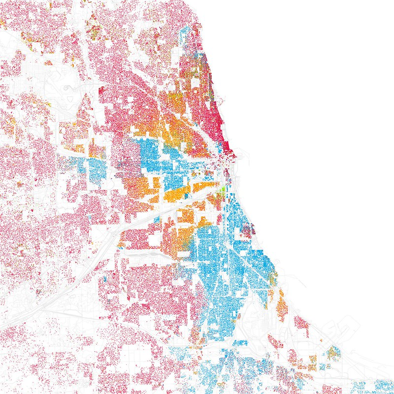
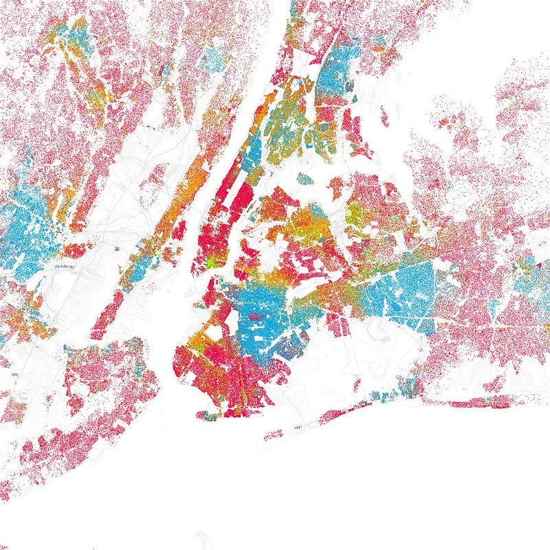
Sorting and peer effects introduction
Why do individuals who study, reside, or spend time together often exhibit similarities in appearance, thought processes, and behaviors?
Any number of mechanisms may lead to the creation of homogeneous groups. We will study primarily the first two of the following mechanisms:
- Sorting effect
-
preferential exodus into neighborhoods with similar neighbors increases homogeneity.
- Peer effect
-
Social pressure from peers causes people to conform or to leave, increasing homogeneity.
- Bandwagon effect:
-
a follow-the-leader effect first noticed in politics. c.f. bandwagon effect** in the many context innovation, marketing, economics ,
- Under Dog effect
-
Similar to a bandwagon effect but where the group arises around a weaker candidate and is sometimes observed in politics,
- Critical-mass/density effects
-
In contagion model epidemiology. We see that a critical mass or density is enough for a seed of sickness to spread to most of the population.
- Adverse Selection
-
When most sellers lack incentives to participate in a market, we end up with a homogenous market full of inferior products. This was investigated in the seminal paper (Akerlof 1970) called the “Market for Lemons,” where the author discusses adverse selection in economics
If you look at the map of Detroit, you see that people of different ethnicity tend to live together in segregated communities. Birds of a feather flock together, and people who look like each other tend to live together. Since people can not change their skin color, the mechanism for this is Sorting.
Alternatively, people could adapt their behavior to match that of others around them. e.g., kids who hang around with kids that are smoking may take an occasional cigarette, and start smoking in this way. Alternatively, if you hang out with people who are serious about their health and don’t smoke, then you might decide to quit smoking. These are examples of peer effects.
Both sorting and peer effects create uniformity within groups. Models have been developed to better understand these mechanisms. Their results have revealed some unexpected insights. In many cases where uniformity is observed, the mechanism that creates the effect isn’t clear. We can’t tell if we are dealing with sorting, peer effects, a combination, or something else. In other words, a model is not an alternative to research. The models we will consider include:
- Schelling’s segregation model tries to explain how segregation is driven by sorting.
- Granovettor’s Threshold model, which is centered around how a minority’s willingness to participate in some collective behavior can define the behavior of the whole group.
- The standing ovation model explains how uniformity arises through a peer effect.
- How we can distinguish between sorting and peer effects is called the identification problem.
There are different types of models:
- Formal Model These are primarily mathematical and logical specifications. The idea behind formalism in mathematics is that most theories, when specified with great precision, lead to greater insights and elimination of paradoxical results. However, a formal model is usually the result of a deep analysis of informal models.
- Game theoretical Models are models involving agents that rationally, following a detailed strategy which maximizes their expected rewards. In this sense their actions can be called optimal. However many real world optimization problems defy an optimal solution.
- Agent based models use agents to represent individuals, organizations or even countries. The agents follow simple rules that govern their behavior and are implemented using framework like NetLogo or Mesa.
ABMs are easy to code, particularly when we know an ABM framework. ABMs can be iteratively refined or simplified. ABMs can be made interactive - which facilitates quick exploratory analysis. ABMs are amenable to automated analysis. Which might reveal optimal strategies that let us proceed to a Game Theoretical model Alternatively, we might use them to formalize the model by deriving some equations that describe the emergent macroscopic behavior. The agents may also be given the capacity to learn more optimal behavior using RL (reinforcement learning). ABM may be tested for their capacity to match real-world phenomena. ABM models that are a good fit can also be calibrated to match the behavior in observed data more closely.
For example, there are many Formal Contagion models that use PDEs to model epidemics. While SIRX models can just as easily handle billions of patients as thousands. However, they cannot be readily queried to check the effectiveness of different mitigation methods for a disease. ABMs, Although limited to 100,000 agents, were used to explore mitigations in various scenarios like nursing homes, primary schools, secondary schools, and even prisons. They were also modified to match specific cases and calibrated using a few real test cases.
Thus, ABMs can give us a high value for our effort and fit into a rapid response.
Schelling’s Segregation Model
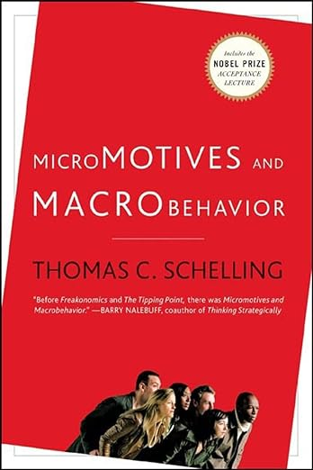
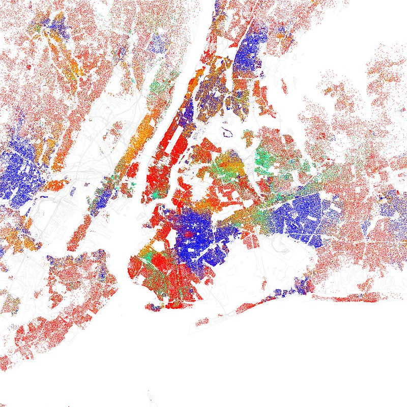
- Red is White,
- Blue is Black,
- Green is Asian,
- Orange is Hispanic,
- Yellow is Other, each dot is 25 residents.
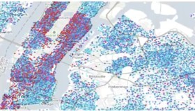
An examination of New York’s demographic distribution, represented on a color-coded map where red dots signify upper-class agents, blue dots denote lower-class agents, and moderately blue dots indicate middle-class agents, reveals that the city is ethnically and economically segregated.
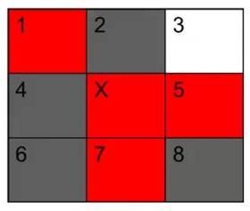
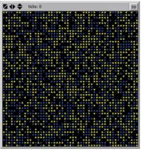
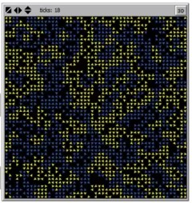
In research papers (Schelling 1969), (Schelling 1971), and later in (Schelling 1978), his famous yet erudite opus Nobel Laureate in Economist and noted game theorist Thomas Schelling outlines how he applied his unique brand of game theory to explore how ethnic and income-based segregation arises in a city. Schelling worked out his model by hand using a game board for a city and some pennies for his agents. He soon discovered that encoding homophily as an incentive for agents to relocate rapidly segregated his city.
Today we can simulate using Agent Based Modeling (ABM) packages like Netlogo or Mesa to implement Schelling’s model. with different thresholds.
| threshold | initial unhappiness | final unhappiness | final similarity |
|---|---|---|---|
| 15% | |||
| 40% | 28% | 0% | 80% |
| 52% | 54% | 0% | 94% |
| 80% | 90% | – | 50% |
we can see that a slight preference of homogeneity leads to almost full segregation in this model. From watching the simulation, we can see that most cascades are concentrated at the boundary of segregated zones and that unhappiness will often be minimized by reducing the boundary to a single line from one edge of the city to another.
Insights
The insights of simulating Schelling’s model are:
- Segregation and other emergent macro-level effects may not reflect the behavior and preferences of individuals at the micro level. We see that individuals who are happy so long as they live with just a minimal proportion of their ethnic group within their vicinity will ultimately find themselves in a state of pronounced segregation.
- Segregation actually breaks down if intolerance gets too high enough.
In this course, we will return to the idea of tipping points. But lacking a clear definition makes the discussions rather pedestrian at times.
I like to think of a tipping point as a critical point in systems dynamics at which there is a discontinuity in macroscopic behavior. Phase changes are best understood in physical systems, where we often find that they have higher-dimensional geometry since the phase change depends on multiple factors.
What Scott calls “a tip” is more straightforward to understand if we call it “a cascade,” which I define as “a chain reaction or sequence of events arising from a single cause.” Not all models exhibit cascades, but when they do, they are a significant part of how the micro is transformed into the macro.
Unfortunately, the simulation I looked at in NetLogo and Mesa doesn’t show how to keep track of cascades and visualize them in real time. The tipping points in this model are the thresholds described above at which we will see large-scale segregation emerge, and the second one is where it stops, and we see permanent churn emerge. What are described below are cascades.
Schelling’s model has a cascade phenomenon. For example, if one person moves, this may trigger another person to move, and so on.
There is an Exodus cascade, which means that a person will leave if a similar person in the neighborhood leaves. The trigger for this cascade for X is due to a like-me neighbor leaving and thus decrementing the numerator of the ‘threshold’ equation from N/D, which is still happy, to (N-1)/D, which is no longer happy, thus triggering X’s move. These exodus cascades will start with the most intolerant neighbor of X, but others with lower thresholds may follow dropping.
There is also a Genesis cascade, in which a person at X could become unhappy if a “different” type of person moves into one of the vacant apartments in his neighborhood, Y. This will happen if X’s threshold is triggered by a denominator increase, i.e., X was happy at N/D < T, but at N/(D+1) >= T, X is no longer happy. Genesis events may cascade if more individuals like Y move into the mixed neighborhood, occupying additional vacant apartments nearby. They can trigger an exodus cascade, creating more vacant lots and clearing the way for further genesis.
In most major urban centers with individuals of diverse ethnic backgrounds, there exists a pronounced segregation along racial lines despite the prevalent desire among the populace to reside in ethnically mixed communities.
Note:
- The threshold is held fixed in this model, but in reality, it is a distribution.
- The rich are a minority & the poor are a majority in most cities.
- The model is biased in the sense that an agent only get unhappy due to lack of self same neighbors. We can just as easily let them get unhappy if there is no diversity by adding a threshold for that. This should allow people to move nearer to the segregated zone or perhaps into an integrated area. This might make the boundaries expand or even setup zones of higher and lower homogeneity.
- if people with lower thresholds decide to move towards the boundary from both sides. If we gave houses a price element that reflected the supply and demand for different preferences, we could see
Measuring Segregation
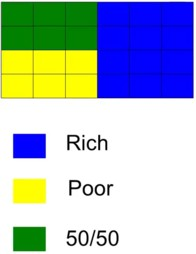
In this lesson, we set our sights on the Index of Dissimilarity as a measure of segregation between two demographic groups living in the same metropolitan region. Its advantage is it’s easy to calculate. Its main shortcoming is that it cannot handle multiple groups, nor can it deal with a continuous variable like wealth. In this section, we consider wealth a dichotomous variable: people are either rich or poor.
What I wanted from this section was to learn the logic for creating such statistics/metrics by myself. I guess that this is not so easy as it seems. However there are a number of other approaches for evaluating segregation and wealth in equality.
Metrics follows
The metric we developed for evaluating segregation called The index of dissimilarity was introduced in (Duncan and Duncan 1955).
Let’s posit a scenario in which a mix of upper and lower class agent live in 24 residential tracts, each inhabited by 10 individuals. Within this configuration, 12 luxury tracts are priced exclusively for rich individuals, 6 tracts of public residential facilities cater only the poor while the remaining 6 tracts share a demographic mix of rich and poor in equal proportion.
The aggregate count of the upper class is 12\times 10 + 6\times 5 = 150
Whereas the total number of the lower class amounts to 6\times 10 + 6\times 5 = 90
Let
- b be the quantity of a particular group within a tract,
- B be the aggregate quantity of that group (150),
- y be the quantity of the contrasting group within that tract,
- Y be the total number of the contrasting group (90),
then the difference between the proportions \frac{b}{B} and \frac{y}{Y}, or
\left | \frac{b}{B} - \frac{y}{Y} \right | \qquad \tag{1}
Serves as an indicator of the extent to which the distribution in the tract deviates from a state of diversity.
Utilizing this metric, a perfectly homogenous tract would possess
|\frac{b}{B} - \frac{y}{Y}| = \frac{5}{150} - \frac{3}{90} | = 0.
For the blue tracts: \left |\frac{b}{B} - \frac{y}{Y} \right | = \left | \frac{10}{150} - \frac{0}{90} \right | = \frac{1}{15} For the yellow tracts: \left | \frac{b}{B} - \frac{y}{Y} \right | = \left | \frac{0}{150} - \frac{10}{90} \right | = \frac{1}{9}
For the green tracts: \left |\frac{b}{B} - \frac{y}{Y} \right | = \left | \frac{5}{150} - \frac{5}{90} \right | = \frac{1}{45}
The Index of Dissimilarity
(\frac{1}{2}\sum |\frac{b}{B} - \frac{y}{Y}|) \qquad \tag{2}
We sum the individual differences and then divide them by 2 to keep the range of the index between 0 and 1.
- 0 indicates heterogeneity.
- 1 indicates homogeneity.
For the example above, you have
\frac{1}{2} \left (\frac{12}{15} + \frac{6}{9} + \frac{6}{45} \right ) =\frac{72}{90} = 0.8
Which is highly segregated.
A Generalized Index of Dissimilarity
D_G = \frac{1}{2} \frac{\sum_j \sum_i \left | N_{ij}-E_{ij}\right |}{\sum NP_j(1-P_j)} \qquad \tag{3}
Where:
- E_{ij} = \frac{N_i N_j}{N}
- P_j = \frac{N_j}{N}
Moran’s I
Moran’s I is a measure of spatial autocorrelation. The statistic for a spatial variable x_h over the occupied cells follows Equation 4: \text{Moran's I} = \frac{M\sum_i\sum_jw_{ij}(x_i-\bar x)(x_j-\bar x)}{\sum_i\sum_jw_{ij}\sum_i(x_i-\bar x)^2 \qquad} \tag{4}
Where:
- x_h is defined as x_h = 0 if h is occupied by red agents and x_h = 1 if h is occupied by yellow agents.
- x_i, x_j denote the values of x_h in cells i, j;
- M = Round((1-d)\times N^2) is the overall number of occupied cells,
- \bar x is the mean value of x_h over the occupied cells,
- w_{ij} = \begin{cases} 1 & \text{if } j \in U(i) \\ 0 & \text{otherwise}\end{cases}
Interpretation of the statistic
- A value of Moran’s I close to 0 represents an integrated region.
- A value close to 1 represents a fully segregated region.
Interaction or Exposure Index (B)
The Interaction Index, also known as the Exposure Index, is a measure of potential contact or interaction between different groups in a geographic area. It measures the probability that a member of one group will come into contact with a member of another group.
The formula for the Interaction Index (B) between group X and group Y is:
B(X, Y) = \sum_{i=1}^{n} \frac{x_i}{X} \frac{y_i}{T_i} \qquad \tag{5}
Where:
- n is the total number of tracts.
- x_i is the population of group X in tract $i.
- X is the total population of group X in all tracts.
- y_i is the population of group Y in tracts i.
- T_i is the total population in area i.
- The sum is taken over all areas i.
Interpretation:
- The Interaction Index has values ranging from 0 to 1.
- A value of 0 indicates complete segregation.
- A value of 1 indicates complete integration.
Segregation in Multiple Categories: Entropy Index
Both the Index of Dissimilarity and Interaction Index can only measure the segregation of two groups compared to each other.
The Entropy Index is a measure of diversity that measures the spatial distribution of multiple groups simultaneously. It may be used to quantify segregation in a population across multiple groups. It is calculated as follows:
\text{{Entropy Index}} = -\sum_{i=1}^{n} p_{ij} \log(p_{ij}) \qquad \tag{6}
In this formula:
- n is the total number of groups.
- p_{ij}= \frac{n_{ij}}{n_i} is the ratio of group i in cell j
- n_{ij} = number of population of jth ethnicity in cell i
- n_{i} =total population in cell i
- The sum is taken over all groups i in each cell j.
- The logarithm is typically base 2 or base
e(natural logarithm), depending on the context.
Interpretation: - The Entropy Index ranges from 0 (no diversity, all members belong to the same group) to log(n) (maximum diversity, members are evenly distributed across all groups). - In the context of segregation, a lower Entropy Index indicates higher segregation (less diversity within areas), while a higher Entropy Index indicates lower segregation (more diversity within areas).
Segregation in the Wild.
The following table based on data from Most to Least Segregated Cities in 2020 According to 2020 Census Data shows segregation levels in major US cities
import pandas as pd
from itables import show
df = pd.read_csv("data/seg_high_place.csv")
df['City'] = df['City'].str.slice(0,20)
show(df,maxBytes = 200 * 1024)| Rank | City | Divergence | Segregation Category |
|---|---|---|---|
|
Loading ITables v2.1.0 from the internet...
(need help?) |
One more point to consider is, given all the simplifying assumptions, how useful is the scheduling model for modeling reality?
In real life, residential real estate is usually bought through careful deliberation, and the key factors are price per square meter and the largest loan one can get. This seems to be a far cry from the Schelling model. This point is considered in great detail in (Hatna and Benenson 2012), which looks at segregation in two mixed cities in Israel.
Peer Effects
Granovettor’s Threshold Model
Peer effects can have a contagious mechanism a kin to the spread of diseases. Another aspect of peer effects is called “the tail is wagging the dog,” where a small minority sets the tone for the whole group. Situations where behavior in which the most extremist people at the tail end of the political distribution determine what will happen will always be challenging to predict, for instance, political uprisings like the fall of the Berlin Wall and more recently the Orange Revolution in Ukraine. In such cases, it is difficult to predict what will happen, and the Granovetter Model explains that it is a microcosm in which we can study why it is so challenging to predict such events.
In (Granovetter and Soong 1983, 1986, 1988) the authors discusses Granovettor’s Threshold Model which can be described by:
- N population size.
- Agent j has a participation threshold T_j and will only participate if T_j others individuals participate.
- An Agent with a threshold of 0 will always participate.
- An Agent with a threshold of 10 will wait till it sees 10 other agents participating.
Thus, the outcome varies depending on the distribution of thresholds.
Assume that there are five individuals and that the behavior is participating in a riot.
| # agents | threshold |
|---|---|
| 1 | 0 |
| 1 | 1 |
| 3 | 2 |
Then, we can expect that the first agent will start protesting because her threshold is 0. Then second the agent will join the protest since his threshold is 1. The other thee will now join the protest as their threshold is 2.
With
| # agents | threshold |
|---|---|
| 3 | 1 |
| 2 | 2 |
We can expect no one will riot even though the collective has a much lower threshold for participation.
With
| # agents | threshold |
|---|---|
| 1 | 0 |
| 1 | 1 |
| 1 | 2 |
| 1 | 3 |
| 1 | 4 |
| 1 | 5 |
Every agent will, in turn, join the protest even though the collective isn’t as polarized as the previous one. We can see this is a case where the extremists set the tone.
We can conclude that in this model of collective action, participation is more likely when :
- The thresholds are lower
- There is a greater variation of thresholds.
The second point is why it is so hard to predict if a riot or a run on a bank will take place. First, you need to estimate the level of discontentment and also the distribution of thresholds.
The Standing Ovation Model
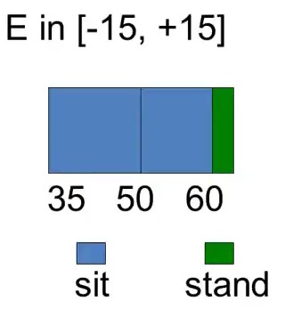
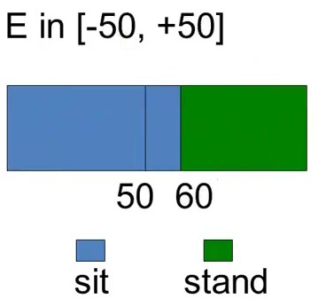
Granovettor’s Threshold model can explain participation in risky activities where risks and rewards are tied to the number of peers participating.
The basic SOP can be stated as follows: A brilliant economics lecture ends, and the audience begins to applaud. The applause builds, and tentatively, a few audience members may or may not decide to stand. Does a standing ovation ensue, or does the enthusiasm fizzle? — (Miller and Page 2004)
The Formal Model:
- Agents are seated in a rectangular auditorium with R rows and C seats per row.
- At the conclusion of a performance, each agent makes an evaluation of the performance’s quality.
- Let q_{ij} ∈ Q_{ij} = [0, 1] represent the quality signal received by the audience member seated in the ith row and jth seat.
- Higher values of q_{ij} represent greater perceived quality.
- For the moment, values may be thought of as either private or common with idiosyncratic noise, or some convex combination of the two.
- Each audience member possesses an exogenous threshold level in addition to his or her quality evaluation.
- The threshold level for the agent in the ith row and jth seat, T_{ij} , equals the minimal quality required for that agent to stand immediately.
- Thus, if an audience member’s private value weakly exceeds the threshold, that is if q_{ij} \ge T_{ij} , she stands immediately. If not, she remains seated.
- Let s^t_{ij} \in \{0, 1\} denote whether or not the audience member is standing (s^t_{ij}=1) or sitting (s^t_{ij}=0) t time periods after the completion of the performance, and let S^t be the total number of audience members standing at time t. Therefore,
S^0 = \sum ^C_{j=1}\sum ^R_{i=1} s^0_{ij}
equals the number of agents standing immediately. In interesting cases, only a fraction (0 < S 0 < R \cdot C) of the audience stands immediately. With a portion of the audience standing, those who remain seated must decide whether to stand, and those audience members standing must decide whether to remain standing or to sit. Both decisions rely on local information—possibly the number of neighbors standing or the percentage of audience members within sight who are standing—as well as the initial quality appraisal of the individual.
For example, someone seated surrounded entirely by people who are standing most likely will stand, unless she abhorred the performance. Similarly, unless she felt that the performance was stupendous, an isolated standing person may decide to sit if her neighbors do not join the standing ovation quickly.
The behavior of an audience member at a particular point in time can be represented by a heuristic that maps her information and quality appraisal into an action, either sit or stand. Periods are considered as discrete units. The continuous time case shall be addressed later in the discussion of random asynchronous and endogenous asynchronous updating. Let K_{ij} be the seat assignments visible to the audience member in the ith row and jth seat. Define a behavioral rule at time t > 0 \text{ by } F^t : K^t × Q_{ij} \to \{0, 1\} \text{ for } t \ge 1. Recall that in period 0, the decision to stand depends only on the agent’s threshold and q_{ij}.
The authors discuss the math and internals of their models as form of noisy channel. Agents need to fuse a signal based on their private information with the information coming from their peers and arrive at a binary decision.
The standing ovation model by Scott and Miller is intentionally presented in the most vague form according to their later publication. This is rather annoying as without a more formal spec it isn’t possible to reproduce any results. Also most people don’t actually seem to implement it as explained in the lesson or the paper.
I found the paper (Miller and Page 2004) rather tiresome and had to have a few goes at it. The authors’ exhortation exaltation on the grandeur of their model is matched by the vagueness of its definitions — basically there are any number of variants and extensions of the standing ovation models. Criticism aside I noticed some point of interest in the paper:
- cascades I was a momentarily shocked to see many references to information cascades in the paper, which I mentioned above. It is evident the authors are well versed on this subject well begging the question, why it this not covered in the course but rather named tips etc.
- ANTs (Active Nonlinear Tests) are another interesting idea - i.e. using them to break the model. This seems to be a from of fuzz testing. At this point though I was still more interested in demonstrating that the model actually works.
- Eventually, I noticed there was a section called the formal model which defined the model more precisely.
- There is also a section on implementing an ABM version with a number of variations they had considered which I summarized below, indicating if I have implemented them.
Rather than go into great detail about the model, I coded it using Mesa. Coding this model required some customization of the framework and that makes more advanced but also more educational. Also I can say that the lesson explained the model rather poor and that only by implementing the model did I get to understand this model.
- Agents are initialized as either standing or not, as with no one is standing at the start the will be no standing ovation.
- At each time step, agents decide to stand based on a Signal > Threshold where the signal is based on the Quality and an error. S=Q+\epsilon > T
Some variations they discuss are
updating: 5
- Synchronous Updating At the start of each discrete time period, all agents update in unison.
- Asynchronous-Random Updating Within each discrete time period, the agents are permuted into a random order and updated in that order.
- Asynchronous-Incentive-Based Updating Within each discrete time period, the agents update one at a time based on an explicit ordering rule that has agents who are least like the people that surround them move first
The following neighborhoods are suggested 6
- Five Neighbors (left, right, front left, front, front right)
- Cones add to the above two more rows in front, each growing by one on each side.
Do agents sit if they are all alone?
Topology is the world
Different geometries
Weighting 7
- of left right neighbors
- of rows in the funnel by inverse square distance (row_2: 1/4 row_3: 1/9)
Can we code partners and group agents. 8
Hecklers & Stooges - these never or always stand. 9
- Can we estimate how many are needed to ensure/prevent a SO?
- Can we add a seat price for the above 2 at limit 10 im middle?
-
generate an animation
do a run to test the paper’s suggested metrics
5 Miller and Page (2004)
6 Miller and Page (2004)
7 Cole (2020)
8 Cole (2020)
9 Cole (2020)
10 Cole (2020)
The model has the following elements.
- Q \in [0,100] is the quality of the show
- \epsilon is an error or diversity
- S=Q+\epsilon is the signal
- T is the personal threshold
- Trigger
- initially Q>T
- later S>T
Three metrics:
import mesa
class AudienceMember(mesa.Agent):
def __init__(self, unique_id, model, threshold=0.5):
super().__init__(unique_id, model)
self.standing = False
self.threshold = threshold # The proportion of neighbors standing that will trigger this agent to stand
def step(self):
# Implement the logic for deciding whether to stand or not
neighbors = self.model.grid.get_neighbors(self.pos, moore=True, include_center=False)
if not self.standing:
standing_neighbors = sum(1 for neighbor in neighbors if neighbor.standing)
if standing_neighbors / len(neighbors) >= self.threshold:
self.standing = True
class StandingOvationModel(mesa.Model):
"""
Model class for the Standing Ovation Model.
"""
def __init__(self, width, height, initial_standing=0.1, threshold=0.5,seed=None):
"""
Create a new Standing Ovation Model.
Args:
"""
super().__init__(seed=seed)
self.grid = mesa.space.SingleGrid(width, height, torus=False)
self.schedule = mesa.time.RandomActivation(self)
self.datacollector = mesa.DataCollector(
model_reporters={"Standing": lambda m: sum([1 for a in m.schedule.agents if a.standing])},
agent_reporters={
"x": lambda a: a.pos[0],
"y": lambda a: a.pos[1],
"standing": lambda a: a.standing,
})
# Create agents
for i in range(width*height):
agent = AudienceMember(i, self, threshold=self.random.uniform(0.1,.7))
self.schedule.add(agent)
# Place agent
x = i % width
y = i // width
self.grid.place_agent(agent, (x, y))
# Randomly decide if the agent is standing at the beginning
if self.random.random() < initial_standing:
agent.standing = True
def step(self):
"""
Run one step of the model.
"""
self.schedule.step()
self.datacollector.collect(self)Some code to visualize the state
import matplotlib.pyplot as plt
from matplotlib.ticker import MultipleLocator, FormatStrFormatter
import numpy as np
def plot_grid(model,model_name,state_name):
"""
Plot the current state of the grid with a graph paper-like background.
"""
grid = np.zeros((model.grid.width, model.grid.height))
for a ,(x,y) in model.grid.coord_iter():
if a is not None:
grid[x][y] = 1 if a.standing else 0
fig, ax = plt.subplots()
ax.imshow(grid, cmap='Greys', interpolation='nearest', extent=[0, model.grid.width, 0, model.grid.height])
# Set up the minor grid lines
ax.set_xticks(np.arange(0, model.grid.width, 1), minor=True)
ax.set_yticks(np.arange(0, model.grid.height, 1), minor=True)
# Set up the major grid lines (every fifth line)
ax.set_xticks(np.arange(0, model.grid.width, 5), minor=False)
ax.set_yticks(np.arange(0, model.grid.height, 5), minor=False)
# Customize the appearance of the grid lines
ax.grid(which="minor", color="blue", linestyle='-', linewidth=0.5)
ax.grid(which="major", color="red", linestyle='-', linewidth=2)
# Hide the major tick labels
ax.tick_params(which="major", labelbottom=True, labelleft=True)
plt.title(f"{model_name} - {state_name}")
plt.show()# Create the model
so_model = StandingOvationModel(20, 20, initial_standing=0.1, threshold=0.5)/home/oren/.local/lib/python3.10/site-packages/mesa/time.py:82: FutureWarning:
The AgentSet is experimental. It may be changed or removed in any and all future releases, including patch releases.
We would love to hear what you think about this new feature. If you have any thoughts, share them with us here: https://github.com/projectmesa/mesa/discussions/1919
plot the initial state
model_name = "Standing Ovation"
state_name = "Start State"
plot_grid(so_model,model_name,state_name)
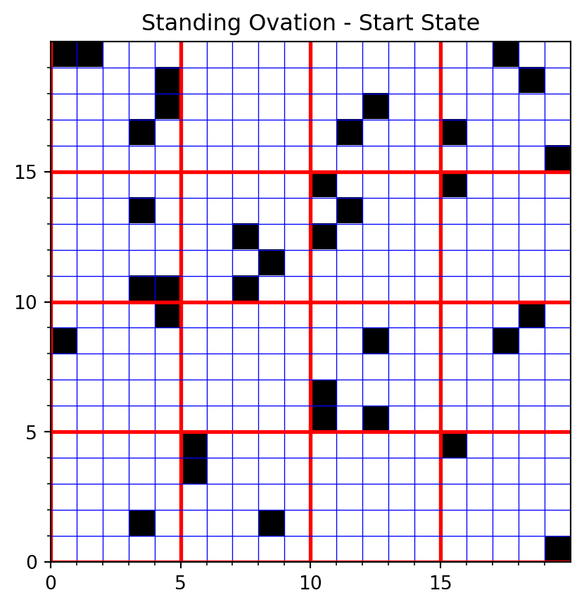
Simulate the standing ovation model for 15 steps.
# Run the model for a certain number of steps
for i in range(15):
so_model.step()Plot the final state.
model_name = "Standing Ovation"
state_name = "Final State"
plot_grid(so_model,model_name,state_name)
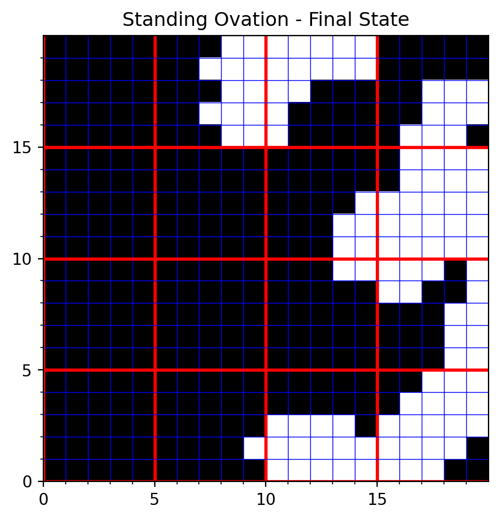
Let’s look at the growth of the ovation.
so_model_df = so_model.datacollector.get_model_vars_dataframe()
so_model_df.head()
#so_model_df.Standing.plot()| Standing | |
|---|---|
| 0 | 106 |
| 1 | 154 |
| 2 | 202 |
| 3 | 239 |
| 4 | 261 |
The following results come from this model.
- Higher Q will result in bigger ovations.
- Lower T will result in bigger ovations.
- A lower percentage of standing X will cause more standing ovations. If X is large, an agent won’t stand up despite many people standing up.
- If X is small, people will jump on any bandwagon.
- For Q < T, greater variation in \epsilon will help the standing ovation spread by increasing a contagion-like effect - as we saw in the previous model.
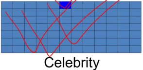
Standing ovation is more likely to emerge when:
- If Quality is higher.
- Thresholds are lower,
- There is a more substantial peer effect
- There is a greater variation in thresholds or errors.
The first three are obvious. Scott suggested that the last one was discovered by implementing his standing ovation model. Once we know about the Granovettor model’s requirement for agents to have different thresholds to enable participation to spread, it is obvious.
The model simplifies reality by excluding factors like the shape of the theater and the locations where people are situated or by assuming people act independently when most people come in pairs or larger groups.
Scott later discusses social roles, which he calls celebrities and academics, that would emerge in a more sophisticated model with a spatial layout with a front and a back. In the first chapter of Micro Motives and Macro Behavior, I later noticed that Schelling analyzed a surprising sitting arrangement that emerged in one of his talks, eliminating many hypotheses.
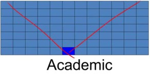
Agents in the front may be assigned a “celebrity” role; they can influence everybody behind them but are not influenced by others. Agents in the back may be assigned an “academic” role. They can see their immediate neighborhood but are unseen by many others.
Scott claims that the standing ovation model is helpful in other scenarios, which is termed fertility for models. The standing ovation model may be useful in modeling collective action problems. However, he doesn’t make a very strong case.
The Identification problem
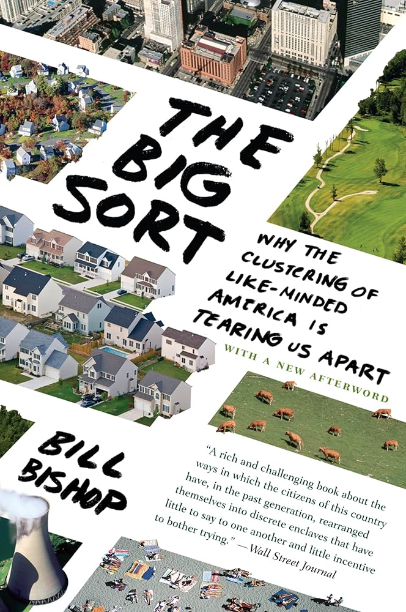
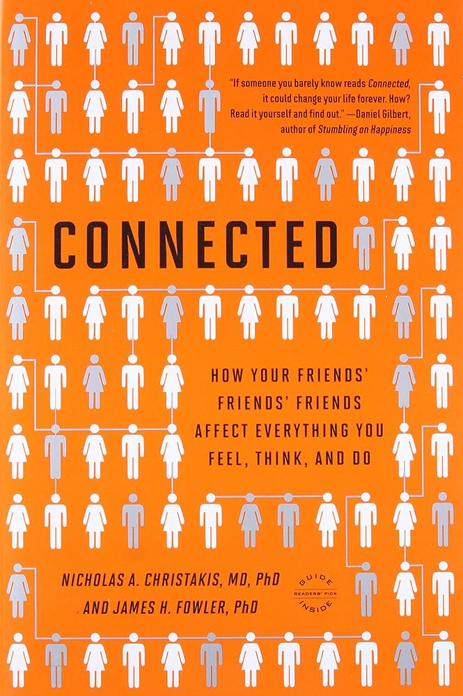
The challenge of distinguishing whether individuals associate with one another due to sorting (as discussed by Schelling) or peer influence (illustrated by the standing ovation example) varies in complexity. In specific scenarios, like Racial segregation, the distinction is straightforward.
However, the situation becomes murkier in other instances. Consider the phenomenon of happy people gravitating towards other happy individuals and the same pattern is observed among those who are unhappy. In these cases, both sorting and peer effects could be at play, and often, it’s challenging to pinpoint which is the driving force since the end result appears the same for both mechanisms. Therefore, simply observing the outcome won’t provide clarity. Sorting, characterized by the physical movement of individuals, necessitates dynamic data for accurate identification.
Author Bill Bishop, discusses sorting in (Bishop 2009) the. For example, in recent years, many counties in the USA have become more polarized. Bishop argues that this occurs due to sorting. However, gerrymandering is a more likely root cause.
Nicholas A. Christakis and James H. Fowler, discusses peer effects in (Christakis and Fowler 2009).
With migration data, it’s simpler to establish whether like-mindedness is caused by sorting or peer effects.
References
Note: this page is based on the following source:
- (Page 2014) MOOC, Course material & Transcripts.
- TA Notes by (Fisher 2014).
- Student notes by in (Klein Ikink 2016) and (Groh 2017).
Akerlof, George A. 1970. “The Market for "Lemons": Quality Uncertainty and the Market Mechanism.” The Quarterly Journal of Economics 84 (3): 488–500.
Bishop, B. 2009. The Big Sort: Why the Clustering of Like-Minded America Is Tearing Us Apart. Houghton Mifflin Harcourt.
Christakis, N. A., and J. H. Fowler. 2009. Connected: The Surprising Power of Our Social Networks and How They Shape Our Lives. Little, Brown.
Cole, Lewis. 2020. “Standing Ovation Model.” 2020. https://lewiscoleblog.com/standing-ovation.
Duncan, Otis Dudley, and Beverly Duncan. 1955. “A Methodological Analysis of Segregation Indexes.” American Sociological Review 20 (2): 210–17.
Fisher, Steve. 2014. “Model Thinking – TA Notes.” https://www.coursera.org/learn/model-thinking; Coursera. November 2014.
Granovetter, Mark, and Roland Soong. 1983. “Threshold Models of Diffusion and Collective Behavior.” Journal of Mathematical Sociology.
———. 1986. “Threshold Models of Interpersonal Effects in Consumer Demand.” Journal of Economic Behavior & Organization 7 (1): 83–99.
———. 1988. “Threshold Models of Diversity: Chinese Restaurants, Residential Segregation, and the Spiral of Silence.” Sociological Methodology, 69–104.
Groh, Rainer. 2017. “Model Thinking - Course Notes by Rainer Groh.” https://aerospaceengineeringblog.com/wp-content/uploads/2017/11/ModelThinking.pdf. November 2017.
Hatna, Erez, and Itzhak Benenson. 2012. “The Schelling Model of Ethnic Residential Dynamics: Beyond the Integrated - Segregated Dichotomy of Patterns.” J. Artificial Societies and Social Simulation 15 (1). http://dblp.uni-trier.de/db/journals/jasss/jasss15.html#HatnaB12.
Klein Ikink, Bart. 2016. “Model Thinking.” https://naturalmoney.org/modelthinking-01.html. March 2016.
Miller, John H, and Scott E Page. 2004. “The Standing Ovation Problem.” Complexity. Wiley Subscription Services, Inc., A Wiley Company Hoboken.
Nanni, Mirco. 2023. “Segregation Models.” 2023. http://didawiki.cli.di.unipi.it/lib/exe/fetch.php/geospatialanalytics/gsa/lesson_09_-_segregation.pdf.
Page, Scott E. 2014. “Model Thinking [MOOC].” https://www.coursera.org/learn/model-thinking; Coursera. November 2014.
Schelling, Thomas C. 1969. “Models of Segregation.” The American Economic Review 59 (2): 488–93.
———. 1971. “Dynamic Models of Segregation.” Journal of Mathematical Sociology 1 (2): 143–86.
———. 1978. Micromotives and Macrobehavior. Fels Lectures on Public Policy Analysis. Norton. https://www.google.com/books?id=4C5mQgAACAAJ.
Citation
BibTeX citation:
@online{2023,
author = {},
title = {Lesson 2 - {Segregation} and {Peer} {Effects}},
date = {2023-08-02},
url = {https://orenbochman.github.io/notes-model-thinking/posts/w02.html},
langid = {en}
}
For attribution, please cite this work as:
“Lesson 2 - Segregation and Peer Effects.” 2023. August 2,
2023. https://orenbochman.github.io/notes-model-thinking/posts/w02.html.